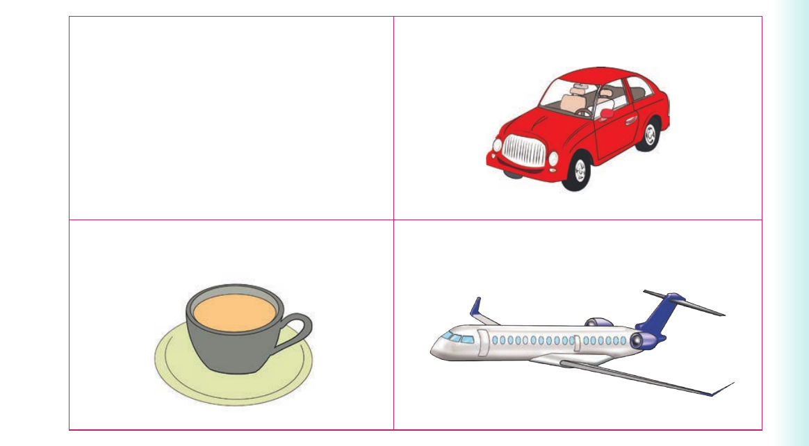

I delete sounds at the end of words. Or I delete letters at the end of words and sign the words
I delete sounds at the end of words. Or I delete letters at the end of words and sign the words.
Activity 1
1. Pronounce or sign the following words:
| card | tent | planet | team |
|---|
2. Delete the last sounds of the words in (1). Or delete the last letters of the words in (1) and sign the words.
Deleting end sounds - continued
3. Name the following orally or using sign language.

(a) (b) 10 (c) (d)
Activity 2
1. Pronounce or sign the following words:
| card | team | warm | start | farm |
|---|---|---|---|---|
| party | seed | tent | dot |
2. Delete the last sound of the words in (1). Or delete the last letters of the words in (1) and sign the words.
3. Pronounce or sign the new words you have formed in (2). 4. Read aloud or sign the following sentences: (a) Put the card in the car. (b) The team drinks tea every morning. (c) Our farm is far from here.